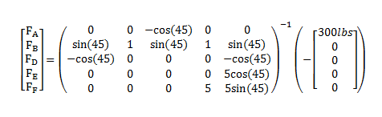

Space Trusses
Space trusses are truss structures that must be analyzed as 3-Dimensional systems. The members in the space truss are not confined to a single plane and they cannot be broken down into parallel flat truss structures.
|
This radio tower is an example of a space truss.
|

The Eiffel Tower is essentially a complex space truss
|
In space trusses, it is assumed that all members are connected by ball and socket joints. This means that the members exert forces on the connection points, but they do not exert moments on the connection points. Even if the joints in the real life system are not ball and socket joints, the moments exerted are usually negligible when compared to the forces exerted so it is reasonable to approximate the joints as ball and socket joints.
A space trusses can be analyzed using the method of joints or the method of sections, just like a plane truss can. Because space trusses are 3-Dimensional systems, there are six possible equilibrium equations for each member or section of the truss. These equations can be used to solve for both internal and external forces.
- The sum of the forces in the X direction is zero.
- The sum of the forces in the Y direction is zero.
- The sum of the forces in the Z direction is zero.
- The sum of the moments about the X axis is zero.
- The sum of the moments about the Y axis is zero.
- The sum of the moments about the Z axis is zero.
Worked Problems
Worked Problem 1:
Calculate the force on member E in the diagram below. Assume the members have negligible weights. The links have been labeled in blue and the joints have been labeled in green.
| Work | Comments |
|
Since the question asks for the forces in a specific member, the method of sections will be a more efficient method. The method of sections allows us to target specific members for analysis without having to analyze all the members in the truss structure. |
|
|
The first step in the method of sections is to choose a cutting plane to divide the truss structure into two pieces. The chosen plane cuts the top one foot of the truss structure off. This cuts through member E which is the member we are interested in. The chosen plane is parallel to the X-Z plane, positive nine feet along the Y axis. To the right is the free body diagram of the top one foot of the truss structure. There is one external force exerted on the section (the 300lb load) and five forces exerted by members that go through the cutting plane. It was assumed that all members were in compression. If this assumption is incorrect and a member is in tension, we will get a negative number as an answer for the member force. |
|

|
Once we have the free body diagram of the section we can come up with the equations of equilibrium for the section that is drawn. There are six possible equations, three sums of forces and three sums of moments. The equilibrium equation for the sum of moments about the X axis is unhelpful though since all forces travel through the defined X axis. This equilibrium equation is discarded leaving us five equations and five unknowns, which should allow us to solve for all the member forces. |
|
To solve the system of equations, we put the system of equations into matrix form. |
|
|  |
We rearrange the matrix equation to solve for the member forces. |
|
Simplifying the matrix equation gives us the five unknown member forces. |
|
|
The answer reveals that member E is a zero force member. It has no tensile or compressive force being exerted on it. |
 |
| Author: Jacob Moore has liscenced this work under a Creative Commons Attribution-NonCommercial 3.0 Unported License. |